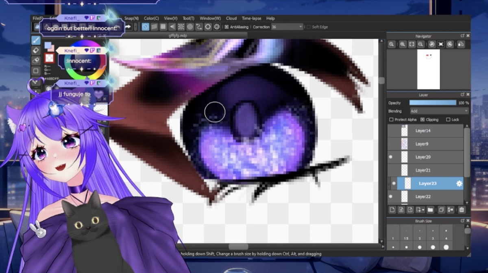
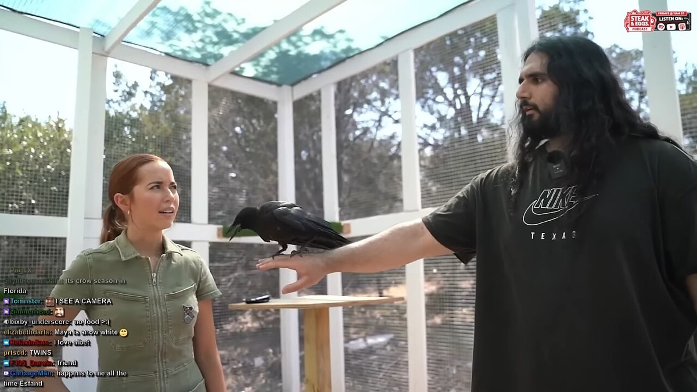
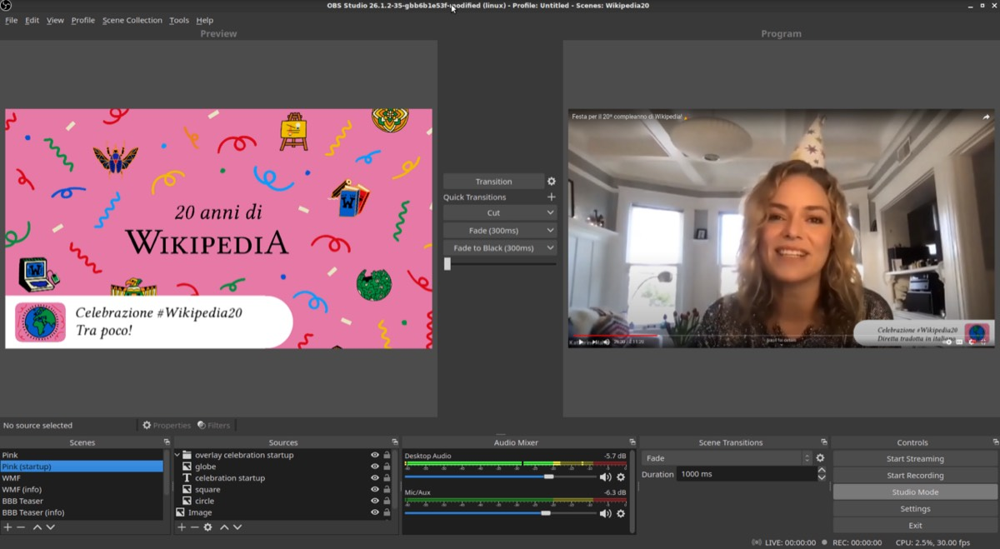
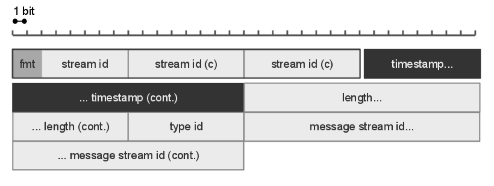
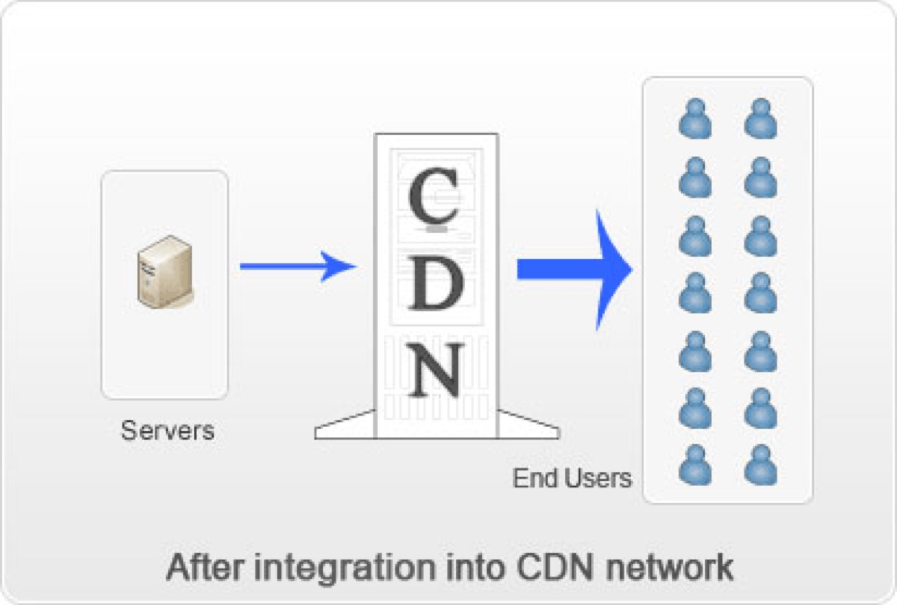
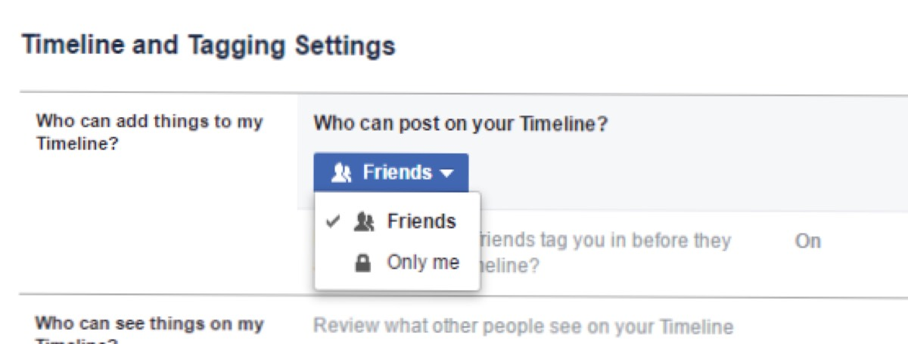
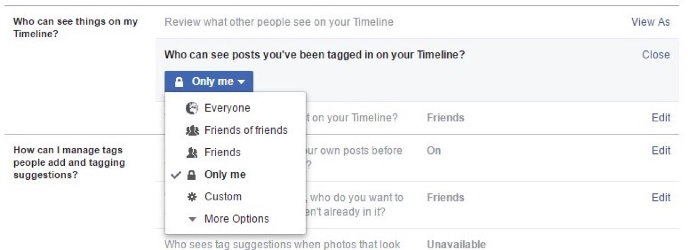

判断は二つである。第一に、カテゴリ別の視聴時間密度の差が、その後の資源の一方通行を説明するか。第二に、Socialcam 売却合意時点で Facebook 接続 MAU はピークを超えていたか。
改稿日 2026年11月11日（査読3回目の反映を含む。初稿 2026年9月26日）。生年月日は Wikipedia の 1982年10月7日。年表の満年齢は 1982-10-07 からの年差。個人持分・受取額は N/A。ドル建ての金額には、その年の年平均レート（FRED AEXJPUS）で換算した円を添えた44。密度の公表値は二次報道（single-source）であり、Twitch 製品史の詳細は企業レポート側に置く。
読者と判断：UGC ライブへの資源配分を評価する。カテゴリ別の視聴時間密度（時間／人）の差が、その後の撤退・売却の方向を予測するかを、Seibel が関与した二つの出口で検証できる。
分解：物理的制約は同時視聴の帯域とエンコード原価である。お金の流れは広告・サブスク・買収対価である。利得の帰属は株主・買収側・配信者に分かれる。法と強制力はプラットフォームのフィード仕様である。時間は「密度が公表された時点」から「資源が移る時点」までの順序と、「指標がピークを過ぎた時点」と「売却合意」の前後関係である。
先に結論を置く。
1. 資源は高密度側へ一方通行した。密度差が主因かは判定不能。Inc.（2009・single-source 二次報道）は Justin.tv 全体で月間約3,100万訪問・約5,000万時間を報じ、割り算で約1.6時間／訪問である。TechCrunch / AllThingsD（2011-06-06・二次報道）はゲーム縦割で月約4.5時間／視聴者を報じる。定義と年次が揃わないため比約2.8倍は参考値に留める。分離（2011）→社名 Twitch Interactive（2014-02）→Justin.tv 閉鎖（2014-08-05）→Amazon 約 $970M（約1,000億円、2014-08-25）の順序は一次・公式で確認できる201234。
2. Socialcam はピーク超えのあと売られた。ピークは The Verge 約8,000万、VentureBeat 系で6月約8,360万。合意時は The Verge 約5,400万、Reuters / VatorNews 約5,470万。Business Insider は合意日に「過去数週間で半減」と AppData を引用した839404142。
会社レポートとの境界。帯域シェア・カテゴリ横断・製品ロードマップは企業レポート側。本ページの固有部分は密度比の計算と、Socialcam 出口の MAU 前後関係である。


比較の分子は 2011-06-06 のゲーム縦割である。TechCrunch と AllThingsD（二次報道）は一致して、月間ユニーク約320万、視聴者1人あたり月約4.5時間を報じる。分母は 2009年の Justin.tv 全体である。Inc.（single-source 二次報道）は月間約3,100万訪問、月間約5,000万時間の視聴を報じる。5,000 ÷ 3,100 ≈ 1.61 時間／訪問である。定義は「訪問」と「ユニーク」で揃っていない。年次も 2009 と 2011 でずれる。公表値の比は約 4.5 ÷ 1.6 ≈ 2.8 倍だが、同一定義の比較にはならない1220。


補助指標も同じ方向を示すが、一次ではない。The Next Web（2011-06・二次報道）は、ゲーム視聴者の月4.5時間に対し「平均的なインターネット利用者の全ジャンル動画は月約3時間」と社側説明を添える。ゲーム側は約6か月で約400%成長しスピンオフ閾値を超えた、とも記す。BusinessWire（2011-08）は7月にユニーク約800万、視聴約10億分（約2.1時間／人）と報じた2223。

資源配分の順序は次のとおりである。2011-06 分離発表（CEO Seibel が収益寄与を説明）。2014-02 社名を Twitch Interactive へ。2014-08-05 Justin.tv 本体閉鎖（公式理由は Twitch への資源集中）。2014-08-25 Amazon が約 $970M（約1,000億円）で買収合意（SEC / Amazon）。汎用側へ資源が戻った形跡は無い。反証条件 (b) は成立しない237345。
| 項目 | 値 | 日本円 | 時点・定義・種別 |
|---|---|---|---|
| Justin.tv 訪問 | 約3,100万／月 | — | 2009・Inc.・single-source 二次報道20 |
| Justin.tv 視聴時間 | 約5,000万時間／月 | — | 2009・Inc.・single-source 二次報道20 |
| 全体密度（計算） | 約1.6時間／訪問 | — | 5,000÷3,100・参考値 |
| ゲーム密度 | 約4.5時間／視聴者 | — | 2011-06・TC/ATD・二次報道12 |
| 密度比（参考） | 約2.8倍 | — | 定義・年次不一致 |
| Twitch 買収 | 約 $970M | 約1,000億円 | 2014-08-25・SEC4 |
判定：主張1は判定不能。資源の一方通行は確認できる。密度差が主因かは、分母定義と年次の不一致、ならびに二次報道依存のため判定できない。必要なデータは 2011年同時点・同一定義のカテゴリ別時間／人の一次である。
It has become a good portion of our revenues.... It's been a cash driver from the get-go. Gaming content monetizes really well. Michael Seibel（Justin.tv CEO）、2011-06-06・AllThingsD。収益寄与の同時代説明。密度の一次ではない2


Socialcam は 2011-03-07 ローンチ、Seibel が CEO。成長経路は Facebook Open Graph の自動投稿だった、と本人インタビューが説明する2526。
ピーク付近の数字は複数ある。The Verge は約8,000万。VentureBeat は 2012年6月に Facebook 接続 MAU 約8,360万と記す。Cristina Cordova の整理（Digital Stats 経由）も6月 83.6M を使う。合意時点は The Verge 約5,400万、Reuters と VatorNews が約5,470万。Business Insider（2012-07-17）は「AppData では過去数週間で半減」と書く。いずれも合意日時点でピーク超えである83940414243。
| 時点 | MAU等 | 日本円 | 出典 |
|---|---|---|---|
| ピーク（Verge） | 約8,000万 | — | The Verge 2012-07-178 |
| ピーク（6月） | 約8,360万 | — | VentureBeat / Cordova 系3943 |
| 合意時 | 約5,400万 | — | The Verge8 |
| 合意時 | 約5,470万 | — | Reuters / VatorNews4041 |
| 合意日の記述 | 数週間で半減 | — | Business Insider・AppData42 |
| 対価 | 約 $59.5M | 約47億円 | SEC 2012-08-017 |
| 約6か月後 | 5百万未満 | — | BI 2012-119 |
判定：主張2は支持。Open Graph 変更が急減の排他的原因か、独立需要が無かったかは本主張の外である。
主張1・2の日付だけを追う。日付の右は満年齢（1982-10-07）。
密度差のあと約 $970M（約1,000億円）を受け取ったのは Twitch Interactive 株主である。個人内訳は N/A。MAU ピーク超えのあと約 $59.5M（約47億円）を払ったのは Autodesk である。フィード仕様を決めるのは Facebook 側である。YC の役職年次は境界外の要約に留め、W21=319社のみ記す13。